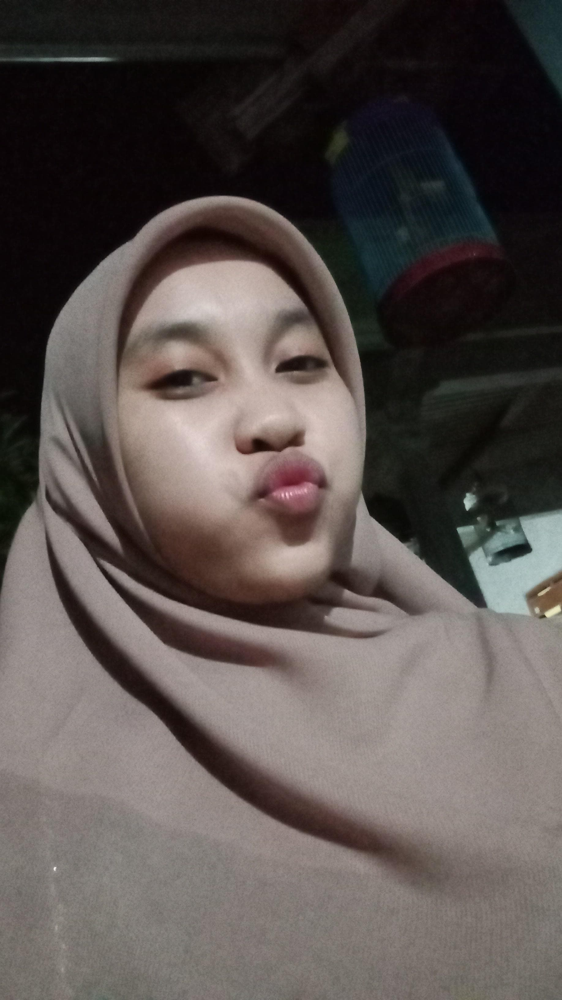
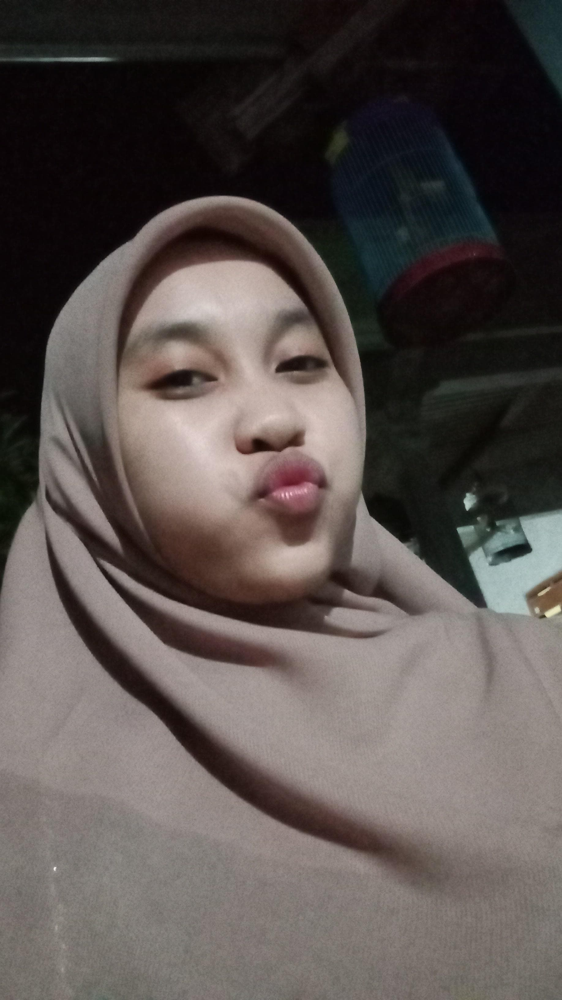
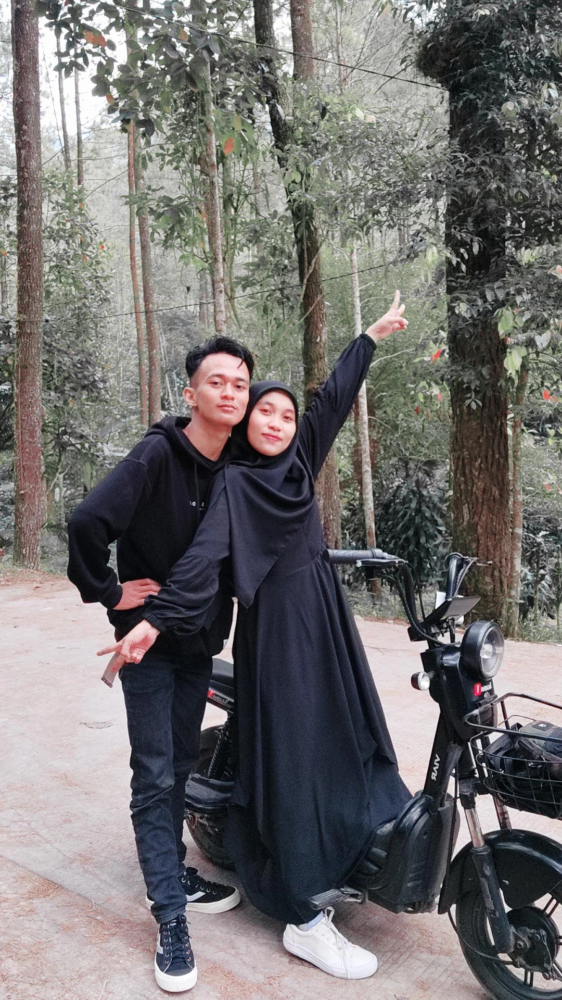
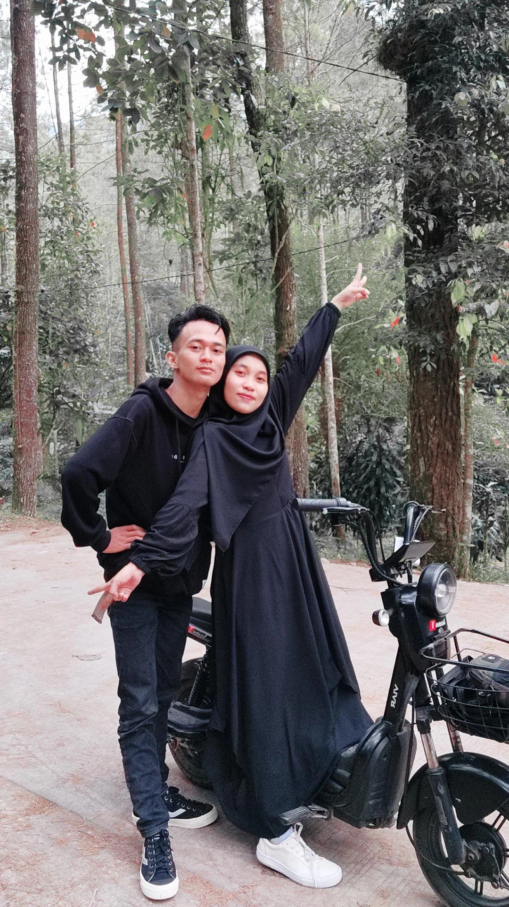

Dear Windiyanti,
Selamat ulang tahun untuk wanita paling spesial dalam hidupku! 🌸✨
Di hari yang penuh kebahagiaan ini, aku ingin mengucapkan betapa beruntungnya aku bisa mengenal seseorang seindah dirimu. Kamu adalah sosok yang begitu cantik, bukan hanya dari luar tapi juga dari dalam. Senyum manismu selalu bisa membuat hariku cerah, dan manjamu yang lucu selalu menghangatkan hatiku. Kadang, saat kamu cengeng, justru itu yang membuatmu semakin memikat, karena di setiap tangismu, ada kelembutan dan ketulusan yang begitu jarang ditemui. Kamu itu orang yang sangat baik hati, selalu peduli pada orang lain, dan nggak pernah ragu memberikan yang terbaik untuk orang-orang yang kamu cintai. Kamu selalu mendahulukan kebahagiaan orang lain, dan itulah yang membuat kamu begitu istimewa. Semoga di hari ulang tahunmu ini, semua kebaikan yang kamu tanam selama ini kembali kepadamu dengan berlipat ganda. Aku harap kamu selalu dikelilingi cinta, kebahagiaan, dan kesuksesan di setiap langkahmu. Semoga semua mimpi-mimpimu terwujud, dan setiap harimu dipenuhi tawa dan senyuman. Di tahun baru dalam hidupmu ini, jangan pernah ragu untuk menjadi dirimu sendiri, karena dirimu yang apa adanya itu sudah sangat sempurna. Ingat, meski ada hari-hari yang mungkin terasa berat, aku akan selalu ada di sampingmu, mendukungmu, dan memberikan semangat. Kamu nggak pernah sendiri, karena ada begitu banyak orang yang menyayangimu dan menghargai setiap sisi dari dirimu. Selamat ulang tahun, sayang! Semoga kebahagiaan selalu menemanimu, dan dunia selalu tersenyum untukmu seperti kamu selalu menyebarkan kebahagiaan ke sekitarmu. Teruslah bersinar dengan cara kamu yang unik. Aku cinta kamu, dan aku bangga bisa menjadi bagian dari hidupmu. Happy birthday, beautiful soul! 🎉💖"
With love,
Aldi Mustofa


 



 
